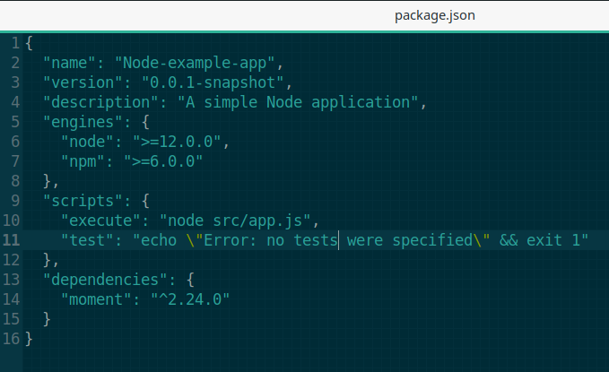
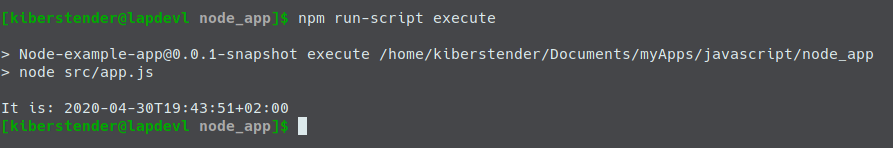
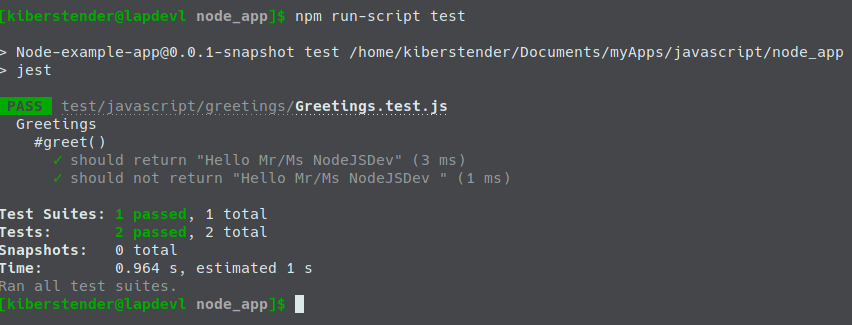
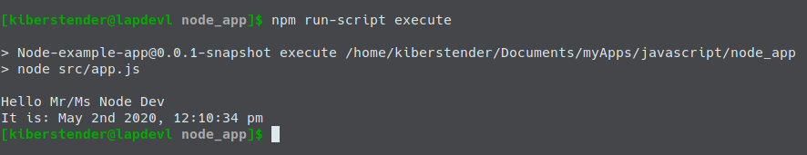

Introdução
No início da década de 2010, o mundo começava a olhar para o Javascript novamente. Com a popularidade do JQuery e as melhorias feitas no Ajax (Assynchornous Javascript and XML), agora você não precisa colocar código Java/PHP/{qualquer outra linguagem de backend} no meio de seu arquivo HTML para gerar coisas dinâmicas que vem do backend. Você pode buscar dados de qualquer servidor que queira e usar JQuery para modificar uma parte única de sua página sem atualizá-la por completo de forma a parecer instantâneo. Por que agora, você não precisa mais baixar uma página HTML inteira e sim pequenos textos JSON e XML.
Conforme Javascript foi se tornando popular a síntaxe e a biblioteca base começaram a receber atualizações, como a adição de Promises, síntaxe Import/Export, função Async, operador Await, funções Arrow, síntaxe Spread, parâmetros Rest e atribuição por Destructuring. Todas essas novas funções e outras que não coloquei aqui, deixaram Javascript muito melhor do que já foi no passado e trouxe atenção de volta a ele.
História bem mal resumida( e não muito confiável) do Node
No ínicio havia Javascript no seu navegador, e isso era bom(mais ou menos). Mas Javascript diferente de java, é uma linguagem de script(Duh!) e mesmo que tenha suas especificações ditadas por um companhia e publicada sob o nome ECMA, cada navegador tem sua própria forma de otimizar ou implementar as especificações. Assim em 2008 o Google lançou o V8. Enquanto ele(o V8) era muito bom no Google Chrome, "uns caras" perceberam que fazendo algumas modificações neste motor eles poderiam usar Javascript não apenas em seus navegadores mas como um interepretador de propósitos gerais, similar ao Python. "Estes caras" nomearam essas modificações de NodeJS.
Um pouco sobre o NPM
Assim como o que o Maven faz no Java, eles introduziram uma tecnologia similar chamada NPM(Node Package Manager) que baixa as dependências, coloca no 'classpath', empacota, faz o deploy e publica sua aplicação/biblioteca. A diferença é que você precisa instalar o Maven separado do Java enquanto o NPM já vem com o Node.
Para usar o NPM você simplesmente cria um arquivo na raiz de seu programa chamado package.json com a seguinte estrutura (mínima):
{
"name": "NomeDaMinhaAplicação", //1
"version": "0.0.1-snapshot", //2
"description": "Um exemplo de package.json", //3
"engines": { //4
"node": ">=4.0.0",
"npm": ">=4.0.0"
},
"scripts": { //5
"run": "node app.js",
"test": "executa sua biblioteca de testes"
},
"dependencies": {//6
"a: "1.2.3",
"b: "3.2.1"
},
"devDependencies": { //7
"c: "1.2.3",
"d: "3.2.1"
}
}
Existem mais propriedades que você pode ter em seu arquivo package.json, mas estes que estou mostrando são os mais importantes(Com exceção de engines). Vamos dizer que são aquelas propriedades que você não pode esquecer de adicionar. Agora explicando separadamente cada item nós temos:
name: Este é o nome de sua aplicação/bibliotecaversion: Esta é a versão de sua aplicação/bibliotecadescription: Aqui é onde você pôe uma breve descrição de o que sua aplicação/biblioteca faz. Este campo é útil para que outros que usam sua aplicação/biblioteca e é mostrado no site do NPMengines: Este campo é usado para avisar o usuário sobre qual a melhor versão para que seu código possa rodar, logo você pode usar qualquer combinação de números e operadores de comparação(==, >, <, >=, <=) nos sub camposnodeenpmque satisfaça a condição para que seu código rode. Como no exemplo acima que estou a dizer que se alguém rodar esse programa sem ter pelo menos o node v12 ou maior e npm v6 ou maior, a aplicação poderá não rodar corretamente. "Poderá" porque esse campo não impede a aplicação de tentar rodar, ele irá emitir um aviso mas nada mais. Se você quer que a aplicação não rode caso as condições não sejam satisfeitas, você pode criar na raíz de sua aplicação um arquivo de nome.npmrce colocarengine-strict=truedentro dele..npmrcpossui mais funcionalidades mas, para esta postagem esta já é o suficientescripts: Aqui é onde você define os comandos de build, build:prod, test, run ou qualquer outro que achar necessário. Como os plugins do Maven onde você diz ao Maven como executar ou compilar sua aplicaçãodependencies: Aqui é onde você define as bibliotecas dos quais seu programa depende como React, Angular, MomentJS, etcdevDependencies: Aqui é onde você define a lista de blibliotecas ou applicações que não serão empacotadas com o seu código. Imagine que você está programando em Coffeescript ou Typescript. Você não precisa empacotar esses compiladores com seu código, porque no final tudo irá ser transformado em Javascript. Mas não somente compiladores, por exemplo, Uglyfy é um programa que transforma seu código em algo ilegível para outras pessoas e uma vez que foi executado ele não é mais necessário, então é listado aqui ao invés da lista normal de dependências
Após criar este arquivo, o NPM irá ser mais usado para rodar sua aplicação e "instalar" suas dependências. Instalar aqui está entre aspas porque diferente do Maven que você tem que manualmente colocar suas dependências, NPM te dá uma síntaxe onde você pode baixar suas dependências ao mesmo tempo que atualiza seu arquivo package.json com a dependência caso ela não esteja listada ainda:
npm install dependencia-a dependencia-b
Este comando baixa a versão mais nova da dependencia-a ou dependencia-b, se você quer especificar a versão você pode usar o comando:
npm install dependencia@1.2.3 dependencia-b@^1.0.0
Este ^ entre @ e a versão siginifica que você quer a versão mais recente da série 1.x.x, então imagine que hoje a versão mais recente é 1.1.0, mas amanhã quando você rodar este comando a versão mais nova será 1.2.0. Este comando irá atualizar a versão de dependencia-b automaticamente quando baixá- la, então você não precisa olhar todos os dias caso esteja esperando por um update da série 1.x.x para corrigir um bug ou problemas de desempenho.
E para adicionar dependências a propriedade devDependencies você usa uma síntaxe similar. Simplesmente adicione --save-dev ao seu comando npm install:
npm install --save-dev devDependencia-a devDependencia-b@^1.0.0 devDependencia-c@3.0.0
E último mas não menos importante, para executar nossos scripts criados na seção scripts você executa npm run-script nome-script(ou uma versão mais curta npm run nome-script)
npm run-script run #or npm run run
npm run-script test #or npm run test
Instalando Node e NPM
Não irei detalhar muito o processo porque você pode encontrá-lo bem detalhado no site do próprio NodeJs. Vá para a página NodeJS, escolha o pacote apropriado para seu Sistema Operacional. Se estiver usando Windows você pode simplesmente dar dois cliques no arquivo EXE e seguir o padrão próximo~próximo~próximo~instalar. Se você está no Linux ou Mac você pode descompactar o arquivo tar.xz que você baixou usando qualquer aplicação gráfica ou terminal de sua preferência, colocar os conteúdos em algum diretório de sua escolha e criar a Variável de Ambiente chamada NODE_HOME apontando para /caminho/para/o/node/ e adicionar isso a variavel de ambiente PATH:
...
NODE_HOME=/caminho/para/o/node
PATH=$PATH:$NODE_HOME/bin
Para mais detalhes por favor vá até esta página ou está aqui. Como eu disse, NPM vem junto com o Node, então uma vez que você instalou o Node, NPM estará instalado também. Agora teste para ver se tudo está Ok:

Se você preferir, muitos S.Os Linux têm o Node nos repositórios de seus gerenciadores de pacote, então você pode instalar assim:
sudo pacman -S nodejs #OSes baseados em Arch
sudo apt-get install nodejs #Baseados em Debian
...# e assim por diante
Começando o projeto
Agora que você já entendeu o mínimo sobre o Node e como tê-lo rodando em sua máquina, vamos começar nosso projeto Node como uma simples aplicação CLI(Command Line Interface ou Interface de Linha de Comando) escrita totalmente em Javascript.
O primeiro passo que você precisa dar é criar o diretório de nossa aplicação. Vamos chamar de node_app:
Agora vamos criar nosso package.json. Um bem simples:
{
"name": "Node-example-app",
"version": "0.0.1-snapshot",
"description": "Uma aplicação Node simples",
"engines": {
"node": ">=12.0.0",
"npm": ">=6.0.0"
},
"scripts": {
"test": "echo \"Erro: nenhum teste foi especificado\" && exit 1"
}
}
PS: A seção acima é "copiável". Isso significa que se você não quiser manualmente digitá-la, isto é apenas um texto simples que você pode copiar e colar. Todas as seções similares a esta permitem isto. Apenas se atente que as vezes irei postar fragmentos de algo que você precisa mudar e não o arquivo todo e irei adicionar ... (três pontos) para denotar que abaixo ou acima disto você deve manter o conteúdo original.
Como adiciomos a propriedade engine para definir a versão mínima do Node que queremos para garantir que nossa aplicação irá rodar, precisamos finializar a configuração criando o criando o arquivo .npmrc no diretório raíz:
engine-strict=true
PS: Observe que estou a usar node v12 and npm v6 em nossa properiedade engine enquanto a versão mais nova do Node é v13. Você não pode esperar que os servidores estejam completamente atualizados com a mais nova versão do Node por muitas razões como segurança, estabilidade, etc.
O próximo passo é criar o diretório src e dentro dele criar o arquivo app.js e como conteúdo adicione um simples 'console.log("Hello World")':
Ok agora temos o mínimo para nossa aplicação. Edite seu arquivo package.json e adicione um novo script:
...
"scripts": {
...
"execute": "node src/app.js",
...
}
...
E execute com o comando que eu já lhe ensinei:

Se você viu algo similar com a imagem acima, parabéns, você acaba de fazer sua primeira aplicação CLI.
Adição de dependências
Eu lhe mostrei todas as possibilidades do commando npm para adicionar uma dependências mas, o que exatamente é uma dependência? Uma dependência neste contexto é um código externo que agrega ou extende funcionalidades em seu programa. Elas nos ajudam a não reinventar a roda, assim podemos focar nas partes específicas que estas blibliotecas nao conseguem fazer. Isso é chamado dependência porque uma vez que você adiciona a seu código, ele literalmente depende daquela bliblioteca daquele momento em diante e se nao estiver no classpath quando sua aplicação estiver sendo executada ela nao irá executar corretamente.
Javascript possui suporte para objetos do tipo Date que representam manipulação de Anos, Meses, Dias, Horas, Minutos, Segundos, etc. Mas, é conhecido que é meio difícil de usar, espcialmente quando você precisa converter uma data de uma Timezone para outra. Por isso existe uma biblioteca de nome moment.js, que é especializada em manipulação de tempo, lhe dando mais opções do que a Date. Vamos adicionar moment em nossa aplicação para mostrar a data e a hora para nosso usuário, então ao adicionar esta biblioteca à sua lista de dependências ela ficará disponível em seu código como se você a tivesse programadado anteriormente.
Primeiro você a adiciona a seu arquivo package.json usando o seguinte comando:
npm install moment@2.24.0
PS: Use a mesma versão da biblioteca que coloquei acima, assim no futuro esta postagem continuará a funcionar
Observe duas coisas:
- Seu arquivo
package.jsonagora possui um novo campo chamadodependenciesemomentjscomo único item ali:  - Dois itens foram criados na raíz de sua aplicação:
- Um novo diretório chamado
node_modules. Este diretório é automaticamente criado toda vez que você executarnpm install(e/ou suas variações) e contém todas as dependências que seu app tem. Se você acidentalmente o deletar, não se preocupe, quando você executarnpm install, boom, ele reaprecerá novamente, por esta razão você pode ignorar este diretório usando.gitignore,.dockerignoreou qualquerignore[alguma_coisa]em qualquer sistema de versionamento - Um novo arquivo chamado
package-lock.json. Este arquivo é similar aopackage.jsonmas, com uma pequena diferença: Ele lista todas as árvores de dependências, tornando mais fácil para o NPM instalá-las depois e verificar se há conflito, como sepackage.jsonfosse a versão legível para humanos epackage-lock.jsonfosse a versão legível para máquinas. É recomendável que não se ignore esse arquivo em seu sistema de versionamento, mesmo este sendo recriado após executarnpm install
- Um novo diretório chamado
Agora atualizamos nosso /src/app.js para importar e imprimir a data:
const moment = require("moment");
console.log("São: " + moment().format());
Execute sua aplicação novamente e veja a data aparecer:
Testando em Javascript
Notice that our package.json file was updated again and now it has a new field named dev-dependecies and Jest is the only item:
Você sabe, programar é uma coisa mas, testar seu código para garantir que ele faz o que você quer que ele faça é uma coisa completamente diferente. Então como alguém testa código em Javascript? No Node? Uma das bibliotecas mais famosas que eu conheço em Javascript é chamada Jest. É um framework bem completo de suite de testes, como suporte a asserção, "ganchos" de preparar e resetar a configuração, mock, cobertura de código e mais. Primeiro vamos instalar o Jest em nossa list de dev-dependency:
npm install --save-dev jest@26.0.1
Observe que nosso arquivo package.json foi atualizado novamente e agora ele tem um novo campo chamado dev-dependecies onde Jest é o único item:

Vamos criar uma classe separada chamada Greetings in um pacote/diretório. Primeiro criaremos o diretório javascript dentro de /src. Dentro deste(javascript) criaremos um pacote(diretório) de nome greetings and finalmente dentro dele criaremos um arquivo chamado Greetings.js e colocaremos o seguinte conteúdo:
class Greetings {
constructor(name){
this.name = name;
}
greet(){
return "Hello Mr/Ms " + this.name;
}
}
module.exports.Greetings = Greetings;
Agora volte a raíz do nossa aplicação e crie o diretório chamado test, dentro criaremos a mesma estrutura que temos dentro de /src
PS: Não é obrigatório seguir a mesma estrutura, isso é apenas para facilitar a leitura e o Jest por padrão irá procurar pelo diretório ´test´ na raíz de seu projeto
Agora escreveremos nossos testes. Irei escrever apenas dois. Um para sucesso e outro para falha, testes bem simples pois é apenas uma demonstração. Então, dentro de /test/javascript/greetings crie nosso arquivo Greetings.test.js e adicione o código abaixo:
const {Greetings} = require('../../../src/javascript/greetings/Greetings.js');
const greetDev = new Greetings("NodeJSDev");
describe('Greetings', function() {
describe('#greet()', function() {
test('should return "Hello Mr/Ms NodeJSDev"', function() {
//GIVEN
const expected = "Hello Mr/Ms NodeJSDev";
//WHEN
const actual = greetDev.greet();
//THEN
expect(actual).toBe(expected);
});
test('should not return "Hello Mr/Ms NodeJSDev "', function() {
//GIVEN
const expected = "Hello Mr/Ms NodeJSDev ";
//WHEN
const actual = greetDev.greet();
//THEN
expect(actual).not.toBe(expected);
});
});
});
O próximo passo é modificar nosso script test em nosso package.json para executar o Jest para nós:
{
...
"scripts": {
...
"test": "jest"
...
}
}
Execute!!!
Unit testing(Teste Unitário) e mocking
Nem sempre seu código será simples o suficiente e não dependerá de nada mais que seu próprio código interno. Por exemplo:
// Hypothetical file user_db_repo.js
const DB = require("./some_DB_lib");
class UserDBRepo {
getUserBirthdayByID(userID){
//Hypothetical DB API
const birthdate = DB.query("Select u.birthday From User u where u.id = :id").on("id", userID).execute();
if(birthdate === null){
throw new Error("UserID is invalid or user has no birthdate registered");
} else {
return new Date(birthdate);
}
}
}
module.exports.UserDBRepo = UserDBRepo;
Então você tem outra classe que tem um método que recebe o id do usuário e retorna sua idade:
// Hypothetical file user_service.js
const {UserDBRepo} = require("./user_db_repo.js");
class UserService {
constructor(){
this.userDbRepo = new UserDBRepo();
}
getUserAge(userID){
try {
const now = Date.now();
const birthdate = this.userDbRepo.getUserBirthdayByID(userID);
const years = now.getFullYear() - birthdate.getFullYear();
const months = (years * 12) + (now.getMonth() - birthdate.getMonth()) ;
const calculatedAge = -1 * (months / 12);
return calculatedAge;
} catch(e){
throw new Error("Age not calculated for {" + e + "} reason");
}
}
}
module.exports.UserService = UserService;
Para testar UserService, você teria que configurar uma base de dados, como você nao pode conectar a dev ou mesmo prod para rodar seus testes, e quanto mais métodos você tiver mais dados você precisará colocar nesta base local, sem mentionar que você terá que esperar a base subir para que seus testes possam começar. Mas é por isso que eu disse "Você teria", não "Você tem que" ou "você deve".
Unit Test(Teste Unitário) é um de alguns níveis de técnicas de teste para garantir que seu código entrega o que você quer quebrando-o em o máximo de pedaços que você pode/que é possível. Não importa se seu código é dividido em funções ou classes ou módulos. Você irá tratar a menos parte disso como uma unidade(unit) e fingir que qualquer coisa que essa peça depender, é uma peça funcional e ignorá- la.
Em nosso caso, classes são nossas menores peças e nossa dependência é a classe UserDBRepo. Para "ignorar esta dependência" em nosso código e nos focarmos nosso código(neste caso, calcular a idade do usuário), iremos usar uma técnica chamada mocking onde iremos manipular os metadados da classe para que façam o que nós queremos ao invès de connectar a uma base de dados, assim podemos simplesmentre retornar um objeto Date "hardcoded" tornando nossos testes mais rápidos e nos poupando um bom tempo ao nos nos importarmos com configurar uma base temporária, configurar os testes para se conectarem a esta base, por dados válidos, etc.
Mesmo que o Jest venha com recursos de mock, eu as considero um pouco "fracas" porque você não possui muitas opções para mockar objetos. Por isso, precisaremos de outra biblioteca, uma mais focada em mock e a uma das mais famosas no mundo Javascript é a Sinon. Com o Sinon você pode mockar os objetos que você deseja e forçcar suas funções retornar valores hardcoded para simular cenários válidos. Vamos instalá- la:
npm install --save-dev sinon@9.0.2
Agora veremos como mockar nossa classe UserDBRepo para executarmos nosso teste de cálculo de idade:
const sinon = require("sinon");
const {UserDBRepo} = require("../../../src/javascript/mock_example/user_db_repo.js");
const {UserService} = require("../../../src/javascript/mock_example/user_service.js");
const userService = new UserService(); // Object to be tested
describe('UserService', function() {
beforeAll(function(){
const mockedNowDate = Date.parse("02 May 1989 09:00:00");
sinon.mock(Date).expects("now").returns(new Date(mockedNowDate));
});
afterEach(function(){
//To restore any mock you have done after the test is ran
sinon.restore();
});
describe('#getUserAge(userID)', function() {
test('should return 31', function() {
//GIVEN
const expected = 31;
const userID = 5;
//Change the behavior of getUserBirthdayByID to return 30 only when the argument is exactly 5
const mockedDate = Date.parse("02 May 2020 09:00:00");
sinon.mock(UserDBRepo.prototype).expects("getUserBirthdayByID").withExactArgs(5).returns(new Date(mockedDate));
//WHEN
const actual = userService.getUserAge(userID);
//THEN
expect(actual).toEqual(expected);
});
test('should throw error: "Age not calculated"', function() {
//GIVEN
const expected = new Error("Age not calculated for {Error: UserID is invalid or user has no birthdate registered} reason");
const userID = 5;
const errorToBeThrown = new Error("UserID is invalid or user has no birthdate registered");
//Change the behavior of getUserBirthdayByID to throw an exception only when the argument is exactly 5
sinon.mock(UserDBRepo.prototype).expects("getUserBirthdayByID").withExactArgs(5).throws(errorToBeThrown);
//WHEN
//THEN
expect(() => userService.getUserAge(userID)).toThrow(expected);
});
});
});
E é dessa forma que ignoramos tudo que UserDbRepo.getUserBirthdayByID faz e focamos nos dois casos que temos aqui. Quando recebemos uma data válida e quando recebemos uma Exception. Desta forma podemos atestar que nosso método UserService.getUserAge faz o que esperamos que ele faça usando ambos Jest e Sinon.
E para provar que mockar realmente pode fazer o que eu disse, eu fiz deste teste hipotético um exemplo real onde eu criei uma biblioteca inutil dbase dados que nem ao mesnos retorna algo, mockei o user db repo para retornar um espaço de 31 anos, como no teste acima, criei um teste exatametne como você pode ler e se você quiser executar e ver o poder do mock por favor faça o checkout da branch nodejs_introduction_mock_example.
Aplicando ao nosso código
Agora voltando ao nosso código, já que Unit test e mock foram explicados, como podemos melhorar nosso código e testá- lo corretamente? Vamos tranformar esta parte "São: " + moment().format(); em uma classe aparte, assim nossas menores partes serão classes e nosso arquivo /src/app.js não terá código, mnas irá executar códigos de outras classes. Esta classe, iremos chamá- la DateTimeGreetings, depende da biblioteca moment js. Moment Js deve já estar testado logo você não precisa checar se ela faz o que você espera que ela faça, assim ignore- a. Crie a classe /src/javascript/greetings/DateTimeGreetings.js:
const moment = require("moment");
class DateTimeGreetings {
greetDateTime(dateFormat){
return "São: " + moment().format(dateFormat);
}
}
module.exports.DateTimeGreetings = DateTimeGreetings;
Eu sei que este é um código bem simples, mas é bom o suficiente para mostrar unit test em nosso cenário. Aqui nós temos um problema ao testar: Tempo não é constante porque toda vez que você executar seu código ele irá mostrar uma hora difirente, assim uma vez que você escrever seu teste ele estará literalmente "desatualizado" e no próximo segundo todo seu atestamento irá falhar.
Para resolver isto, iremos usar uma função chamada useFakeTimers, que nos permite forçar moment ou qualquer outra biblioteca que você possa estar usando(mesmo a biblioteca Date nativa que todos os navegadores tem) para sempre pegar a data e hora que você colocou quando checarem internamente por isso. Temos que fazer isso ao invés de usarmos sinon.mock porque momento é uma função retornando um objeto que não tem a estrutura prototype, assim não podemos mockar usamnos meios "normais".
Deste jeito nós podemos ignorar moment e forçá- la a retornar o que nós queremos, porque novamente, o que queremos não é testar moment, mas nosso próprio código, neste caso São: {data-hora}. Irei novamente criar apenas dois testes, apenas para ilustrar o que eu estava explicando. Agora va para /test/javascript/greetings/, crie DateTimeGreetings.test.js e coloque nossos testes:
const sinon = require("sinon");
const {DateTimeGreetings} = require("../../../src/javascript/greetings/DateTimeGreetings.js");
describe('DateTimeGreetings', function() {
//Cria uma função que recebe uma data e trava o relógio interno e irá sempre retornar esta data
//para qualquer mecanismo que esteja pegando a data e hora
const clock = date => sinon.useFakeTimers(Date.parse(date));
const mockdate = "30 Apr 2020 10:20:00"
beforeEach(function(){ // Jest utility function to run whatever you want before the tests
//Executa a função relógio para travar a data e hora que escolhemos
clock(mockdate);
})
afterEach(function() { // Jest utility function to run whatever you want after the test
//Executa a função clock para travar a data e a hora para o que nós queremos
clock(mockdate).restore();
});
const dateGreet = new DateTimeGreetings();
describe('#greetDateTime()', function() {
test('should return "It is: 30-04-2020"', function() {
//GIVEN
const format = "DD-MM-YYYY";
const expected = "It is: 30-04-2020";
//WHEN
const actual = dateGreet.greetDateTime(format);
//THEN
expect(actual).toBe(expected);
});
test('should return "It is: 04-30-2020_10:20:00"', function() {
//GIVEN
const format = "MM-DD-YYYY_hh:mm:ss";
const expected = "It is: 04-30-2020_10:20:00";
//WHEN
const actual = dateGreet.greetDateTime(format);
//THEN
expect(actual).toBe(expected);
});
});
});
Agora, ao invés de usar esta classe diretamente em /src/app.js nós a iremos usar em /src/javascript/greetings/Greetings.js. Vamos mudar nosso arquivo /src/javascript/greetings/Greetings.js para fazer /src/javascript/greetings/DateTimeGreetings.js uma dependência para demonstrar novamente como ignoramos dependências quando testamos nossa "unidade":
const {DateTimeGreetings} = require("./DateTimeGreetings.js");
class Greetings {
constructor(name){
this.name = name;
this.dateTimeGreeter = new DateTimeGreetings();
}
greet(){
return "Hello Mr/Ms " + this.name + "\n" + this.dateTimeGreeter.greetDateTime("MMMM Do YYYY, h:mm:ss a");
}
}
module.exports.Greetings = Greetings;
Desta vez, teremos uma estratégia diferente. Ao invés de manipularmos o relógio para sempre retornar a mesma data e hora, iremos manipular a classe DateTimeGreetings para toda vez que executarmos o método greetDateTime com o dado parâmetro MMMM Do YYYY, h:mm:ss a, isso deverá ignorar o código original e nos retornar o seguinte valor: "São: April 30rd 2020, 10:20:00 pm". Vamos editar nossa suite de teste /test/javascript/greetings/Greetings.test.js para vermos como vamos fazer o mock:
const sinon = require("sinon");
const {Greetings} = require('../../../src/javascript/greetings/Greetings.js');
const {DateTimeGreetings} = require('../../../src/javascript/greetings/DateTimeGreetings.js');
const greetDev = new Greetings("NodeJSDev");
describe("Greetings", function() {
beforeEach(function(){
sinon
.mock(DateTimeGreetings.prototype)
.expects("greetDateTime")
.withExactArgs("MMMM Do YYYY, h:mm:ss a")
.returns("It is: April 30rd 2020, 10:20:00 pm");
});
afterEach(function(){
//Isto é para restaurar todos os nosso mocks para o código original
//Como você pode "mockar" coisas diretamente no teste caso você precise, assim como eu fiz no nosso exemplo de base de dados
sinon.restore();
});
describe('#greet()', function() {
test(`should return "Hello Mr/Ms NodeJSDev\\nIt is: April 30rd 2020, 10:20:00 pm"`, function() {
//GIVEN
const expected = "Hello Mr/Ms NodeJSDev\nIt is: April 30rd 2020, 10:20:00 pm";
//WHEN
const actual = greetDev.greet();
//THEN
expect(actual).toEqual(expected);
});
test(`should not return "Hello Mr/Ms NodeJSDev \\nIt is: April 30rd 2020, 10:20:00 pm"`, function() {
//GIVEN
const expected = "Hello Mr/Ms NodeJSDev \nIt is: April 30rd 2020, 10:20:00 pm";
//WHEN
const actual = greetDev.greet();
//THEN
expect(actual).not.toEqual(expected);
});
});
});
E agora execute os testes novamente e você deverá ver:

Para ser claro, todas essas "regras" que eu disse sâo sobre Testes Unitários e Teste Unitário é 1(um) de muitos tipos de teste. Há um tipo específio de teste chamado Integration Test(Teste de integração) onde você precisa "falsificar" uma base de dados por exemplo ou um servidor backend para testes com ajax ou mesmo um motor HTTP para ver se seus pedaços de código integram bem e entregam o que é esperado como um todo. Mas, irei deixar isto para outra postagem focada somente em testes.
Agora edite /src/app.js:
const {Greetings} = require("./javascript/greetings/Greetings.js");
const greetDev = new Greetings("Node Dev");
console.log(greetDev.greet());
Execute sua aplicação e veja o que ela se tornouÇ
Conclusão
Nesta postagem aprendemos o básico do básico sobre criar uma aplicação Node com testes simples e complexo. Por agora é apenas uma simples aplicação CLI mas, daqui podemos evoluir facilmente para uma complexa aplicação frontend ou mesmo backend. Se você deseja ver o código completo, por favor, confira o repositório bitbucket desta esta postagem e faça o checkout da branch nodejs_introduction. E se por algum motivo você não fala português ou prefere ler em inglês, por favor, confira a versão em inglês desta postagem.